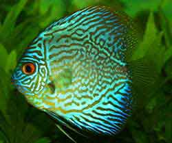
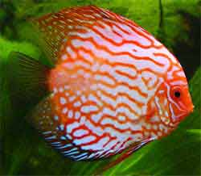

Discus
A GUIDE TO CARING & BREEDING FOR DISCUS FISH

Discus are colorful, graceful and charismatic tank inhabitants. Discus are considered to require a higher level of care than other aquarium fish. Their basic requirements are a larger aquarium (3ft+ is recommended) and stable, clean water. For this reason alone they are not recommended for the beginner aquarist. Discus can be housed with many any other fish as long as they require the same water conditions. They are not compatible with larger aggressive fish such as oscar's or smaller fin nipping varieties.
For more information on a specific type of discus, click on the below links.
Discus do best with smaller tetra’s such as neon tetras, cardinal tetras, ember tetras, harlequin tetras and rummynose tetras. Tetras are usually the most common compliment to discus as they contrast the size and add movement to the aquarium.

Temperature ~84°F
- The optimum aquarium temperature for Discus is around 82°F - 88°F (28°C-31°C). Note that higher temperatures such as these lower dissolved oxygen and limit the number of fish housed in the aquarium. When choosing other fish to go in the aquarium try and fit them in this temperature bound.
pH ~6.5 | Hardness 4.0
- Keep your pH between about 6 and 7. The ideal pH for discus is around 6.5. If your pH is over 7 or below 6 it may begin to cause discus stress. Tank bred Discus species have been known to thrive in pH as high as 7.8 as long as there is little/no fluctuation.
- Relative water hardness should be 1dH - 8dH. This will replicate relatively soft conditions similar to the amazon. Some tank bred variety's are known to withstand higher dH. Water hardness can be softened with the addition of a piece of diftwood to the aquarium water.

Max Size ~6.5"
- Both males and females can grow to around 6.5" (16.5cm) over the course of two years.

Nitrite 0ppm
- Discus are highly susceptible to even very low levels of nitrite in the aquarium.

Ammonia 0ppm
- Discus are very sensitive to any ammonia levels. There will be noticeable loss of color and heavy breathing if ammonia is present. An immediate water change is required.

Nitrate >20ppm
- Nitrates should be as close to 0ppm as possible. Any reading under 20ppm is suitable for keeping Discus, elevated levels can be reduced by adding aquatic plants and removing any decaying matter.

Water Changes >50%
- Discus require the aquarium water should be changed at least 50% each week to reduce nitrates and replenish minerals. Discus are messy feeders and big contributors to nitrates in the aquarium. Be sure to dechlorinate the water before it is changed.

Housing Discus
- Discus are usually combined with planted aquariums. Planted tanks with CO2 injection will usually exhibit a lower pH of around 6.8 which is perfect for Discus. Discus, originally a species from the amazon will feel right at home with a mixture of long stem plants and lower foreground plants. Driftwood is also an excellent compliment that will help these fish feel at home. It will add to the beauty of the aquarium and it will also soften the water and lower the pH to a suitable environment.
- Alternatively, Discus can be housed in a bare bottomed tank. Some hobbyists believe this is the best way to care for discus even though it is not as aesthetically pleasing. Having no substrate allows the tank to be easily cleaned from faeces and rotting debris. This is a sure way to keep the water quality stable and immaculate. When breeding Discus it is highly recommended to put them into a bare bottomed tank. This has a number of advantages including a safe environment for the young and easy aquarium maintenance.

Acclimatizing the Discus
- Ensure the aquarium has been chemically tested and it is within the parameters listed above. Discus are susceptible to rapid changes in water quality.
- It is an excellent idea to add a deworming medication while acclimatizing your discus and they are not in the aquarium. It may compound stress to the introduction process, but healthy discus are usually quite resilient for shorter periods of stress. This will ensure your aquarium and discus are free of any parasites and remain healthy in the long term.
- Using air-line tubing and a rubber band, create a siphon from the aquarium and kink the tubing by placing the rubber band over a bent section of the tube. Adjust the kink to allow a slow drip of 1-3 drops of water per second exiting the tube into a bucket or other with the discus. Let this drip into the bucket for the next 20-30 minutes and monitor closely.
- After 20-30 minutes carefully use a soft mesh net to transfer the discus into the aquarium and monitor their progress.
- If a situation does arise check the water immediately for both temperature and chemical parameters. Perform a water change and try to identify the problem.

Feeding Discus
- Discus will usually take a variety of foods, but due to their carnivorous nature they do best with blood worms, beef heart and then pellets and flakes to provide them with vitamins and minerals.
- For the best coloration of discus you will need to feed them a varied diet of processed and frozen live foods. Granules are usually the best processed option as discus prefer to feed from the middle of the tank. Discus are usually less fond of feeding at the surface. Live or Frozen Bloodworms in a small feeder cone are great. Beware of live blackworms as they often carry parasites that can cause your discus to become unwell.
- Frozen Beef heart that is broken up is an excellent treat for discus. The downside of beef heart is it can pollute the tank, so be sure to do regular maintenance and turn off the filters during feeding time.

Breeding Discus - Requirements
- Discus will readily reproduce in the aquarium but you may need to dedicate months, even a year (if you start out with juveniles) to the prospect. Until recently they had only successfully been bred in captivity a few times and only then by dedicated individuals. However very recently hobbyists have had widespread success breeding discuss by following a few key steps.
- A Discus couple will not spawn in an aquarium that is too shallow. You will need a depth of at least 15 inches due to their tall shape. Smaller 15" cube aquariums can be used for breeding especially because they allow close contact of the breeding partners. However a deeper 36 inches x 18 inches x 18 inches aquarium would be spacious and humane for a suitable breeding pair.
- Make sure the temperature is above 82 F, it needs to be a warmer climate to try and coax them into mating behavior. Replicating the summer and therefore 'rainy' climate of the amazon is a common tool in breeding aquarium fish.
- The pH will need to be kept as close to 6.5 as possible and as stable as possible. The summer amazon rainstorms collect substrate and mud in the wild softening the water. The aquarium water will need to be as soft as possible from 1-4dH. Soft water has poor buffering ability hence it is important to check the water each day to ensure the parameters remain stable (especially pH). You will need to keep nitrates at a minimum by performing water changes every week and siphoning out the waste. About 30-50% will be perfect. These water changes are important and also signify breeding conditions to the breeding Discus.
- When feeding breeding Discus, protein rich foods are the best choice. Diversifying food sources will help to balance the Discus diet. Professional breeders use beef heart but this should also be combined with bloodworms and vegetable matter such as spinach to aid in vitamin uptake. To keep them in good health use some high grade tropical granules twice a week to supply them with the required nutrients and vitamins they may be lacking.
- Placing an upturned clay pot or cone in the discus tank will give a hard surface for the discus to lay eggs on. Be sure the surface is clean and will not pollute the aquarium. Professional plastic cones are sold on line that have been used with proven results. These may be a good consideration to increase laying chances.

Breeding Discus - Raising Young
- Place the spawning medium in the center of the aquarium. The discus will spawn eggs on one side and portion of the cone. The discus will begin cleaning the medium in preparation by constantly 'sucking' at the surface.
- If the discus have not visibly begun to clean the cone, recheck the water quality and ensure they are being fed consistently. It is at this stage it is imperative to ensure the water is soft. This is crucial in the formation of the eggs shell. In hard water conditions, Discus eggs can form an impenetrable shell which young cannot break.
- This stage is the longest of all stages and unfortunately the stage where chemistry is realized. Some discus pairs will never mate in the wild and many more will never mate in captivity. Tank bred Discus have a much higher chance of spawning when compared to wild Discus. This stage requires patience and careful monitoring.
- When and if the discus spawn in this stage, they will lay eggs every week for up to fifteen weeks. This cycle usually occurs twice a year and can be rigged with careful adjustment of feeding, temperature and water conditions. This point is extremely rewarding, Discus mate for life and will hopefully continue to mate for years ahead.
- After courting the eggs will then be laid on the cone or pots surface. They will be very small, mildly opaque spheres stuck to the cone in the order of thousands. The Discus will care for the eggs by constantly fanning them for aeration. The parenting Discus will even pick off and consume the unfertilized eggs to eliminate the chance of disease spreading to healthy eggs.
- From this stage the eggs will hatch within 48 hours. When the eggs hatch you they do not have to be fed directly as they instinctively feed off a secretion delivered from their mother. After 48 hours they should be free swimming and growing very quickly.
- Fry can stay with their parents for a lengthy period of time. However in captivity the young can become very aggressive and begin to remove scales from their mother. At the week old stage it is advisable to remove the parent Discus from the aquarium for their own safety. It is at this point it is necessary to raise the young with commercial food.
- Carefully cared for discus fry can yield survival rates of up to 70%. It is recommended to only sell the Discus young when they reach at least 2" in size. This is to ensure they are strong enough for travel and acclimatization into a new aquarium.